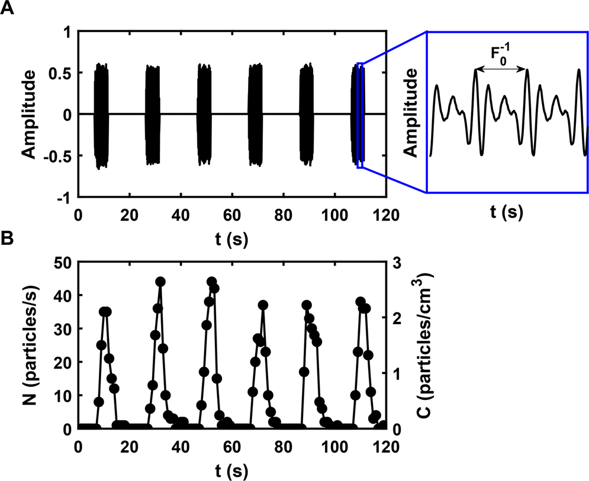
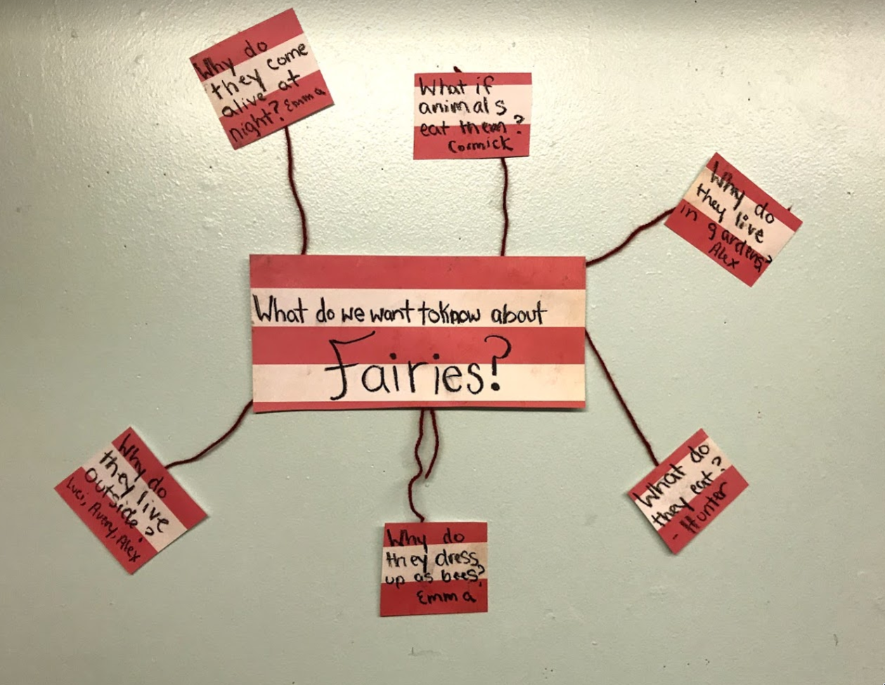

Mental (spatial) models
EPID 684
Spatial Epidemiology
2/1/2022
Jon Zelner
jzelner@umich.edu
epibayes.io
Today’s Theme
Mental models, past and present
Agenda
- Bringing the lessons of The Ghost Map into the present.
- Smoothing in two dimensions.
History repeats itself
In this paper, I have argued that both the long delays in replacing flawed, miasma-driven approaches to cholera prevention in the nineteenth century and long delays in replacing an exclusively contact-and-droplet model of SARS-CoV-2 prevention with one that includes airborne transmission in the twenty-first both had a philosophical explanation in terms of which mental models of reality prevailed and the extent to which scientists and policymakers favoured data over theory. (Greenlagh 2021)
Small scale data provided compelling evidence for the droplet theory of SARS-CoV-2 transmission
Does this echo anything from The Ghost Map?
Why didn’t mechanistic evidence dislodge the droplet-only perspective?

Relationship between voice volume and aerosol production (From Asadi et al. 2019)
Theory shapes our approach to data
Well thought-out models let us:
- Characterize meaningful relationships between physical environments, social environments, and health.
- Reveal the appropriate scale of analysis and intervention.
- Explore the implications of spatially varying policies.
Intuition pumps are cunningly designed [thought experiments, which] focus the reader’s attention on “the important” features, and…deflect the reader from bogging down in hard-to-follow details. (From Dennett, 1984)
Democratized spatial analysis can foster more progressive mental models.
In addressing the “mechanisms of life” in relation to epidemic occurrence, popular access to [spatial] incidence data, coupled with socioeconomic data, is not only democratizing but as a result encourages public critiques of governmental responses to epidemic events and the socioeconomic conditions that influence their intensity. (Koch 2021)
But: A geographic perspective does not automatically foster equity
Granularity of data allows more finegrained analyses, including multilevel spatial modeling. But presented by themselves, such granular data can reinforce what the sociologist Loïc Wacquant has dubbed “territorial stigmatization,” whereby resource-deprived neighborhoods suffer from “blemish of place” and are thought to be “composed essentially of poor people, minorities and foreigners,” many of whom have already been marginalized by the broader society. (Chowkwanyun & Reed, 2020)
Data accessibility \(\ne\) Data equality
While democratizing the result is not universally democratic. An ability to access the data depends on internet access which is not yet universal. Even with that access, manipulation of the data requires cartographic and statistical programs that, while increasingly available at low cost, are neither free nor intuitive. Nor is there any guarantee that alternate interpretations and critical studies will be broadly disseminated. (Koch 2021)
Building our own theory with mind maps

Another way of thinking through the implications of what we’ve read.
Questions
Return to Golden Square

Saying goodbye by spending some quality time with the outbreak data
Next Time
- What is clustering and why should you care?
- Smoothing in two dimensions.